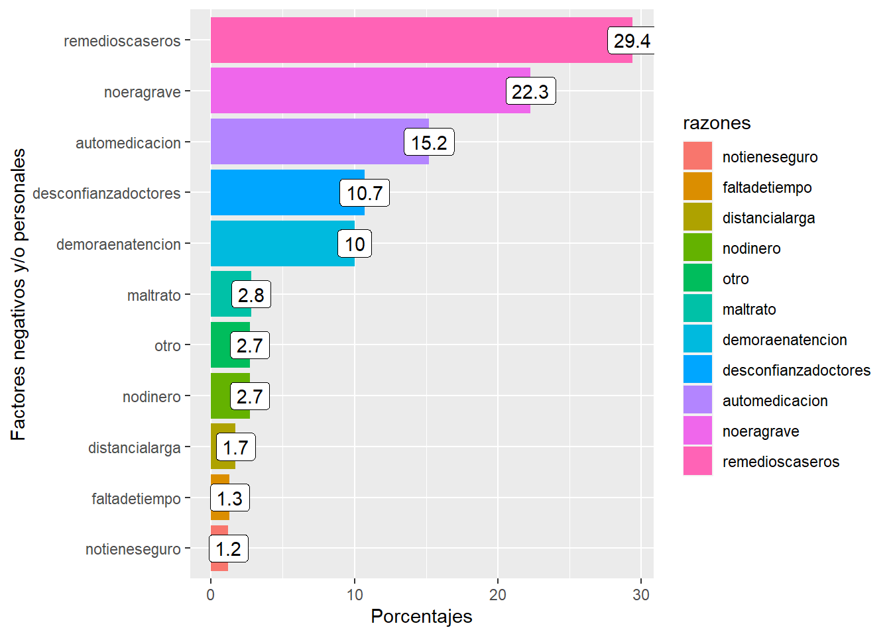

Capítulo 2 Análisis del Perfil de Usuarios de Servicios de Salud para Pacientes con Síntomas De Covid 19 durante el 2020
Maira Chagua
2.1 Introducción
Para Germán Málaga, el sistema de salud se encuentra en condiciones precaria como si tuviera una enfermedad crónica, el escaso presupuesto se orienta a compras de medicamentos y diagnósticos técnicos, asi mismo, este sistema presenta una naturaleza fragmentada y sin articulación con su estructura organizacional y sistemas recurrentes, problemáticas añadidas a las brechas sociales que impiden que el sistema de salud pueda responder a una población en crecimiento y no pueda entregar servicios con la atención requerida de cantidad y calidad frente a la pandemia (2021).
Dicho lo anterior, la inequidad se presenta como un problema latente en las sociedades con desiguales medidas de distribución de la riqueza, en este caso, se nos menciona acerca de la importancia de la oferta en servicios de salud para la atención oportuna y disminución de probabilidad de contraer complicaciones durante la enfermedad o en el peor de los casos, morir (MINSA, 2015).
Bajo la problemática actual, el sistema de salud destinó todos sus esfuerzos para la atención de personas con COVID 19 (oferta de servicios de atención médica). Cuando hablamos de acceso a oferta de servicios de salud, también hablamos de cobertura de seguridad social a través del acceso a los seguros de salud públicos y privados, siendo la exclusión de esta, un factor determinante en la pobreza y desarrollo de la persona y su familia (Solís, Sánchez, Carrión, Samatelo, Rodríguez-Zubiate y Rodríguez, 2009), como resultado de dicha investigación se encontró que las personas que prefieren buscar atenciones médicas en la automedicación en las siguientes cifras (personas sin seguro de salud, 39.1%, asegurados SIS, 34,6%, asegurados a ESSALUD, 17.7%, asegurados a EPS o privados (15.3%) y asegurados FFAA (11%).
En ese sentido, para comprender mejor la problemática de inequidad estructural, el presente trabajo pretende visualizar el comportamiento de las ciudadanas y ciudadanos en torno a los cuidados en materia de mecanismos de detección y atención frente a la posibilidad de contagio de la enfermedad COVID 19 a nivel regional y los elementos que terminan limitando el acceso a los servicios de salud, aspirando encontrar a las variables de vulnerabilidad como elementos que afectan la posibilidad de una segunda oportunidad de vida.
Se espera encontrar evidencias que nos refuercen la idea de combatir la desigualdad de forma oportuna es imperativo para una mejor cobertura de los servicios de salud, por ejemplo, las investigaciones expuestos por Mújica y Pachas (2020) nos muestran una marcada desigualdad en la mortalidad general por COVID 19, entre las provincias de Lima y Callao. Las cifras de muertes durante la cuarentena, eran extremadamente elevadas en aquellos hogares con menos recursos financieros.Esta marcada desigualdad, acompañado de acceso a la oferta en salud, generan altos grados de desigualdad que terminan en altos costos sociales; la mortalidad.
A partir de la información presentada, elaboramos un análisis de la preferencias de los ciudadanos y ciudadanas con sintomas de covid 19, de igual forma, buscamos conocer aquellos motivos de las personas quienes no buscaron atención médica, buscando comprobar si la existencia de brechas estructurales como acceso a los servicios de salud o las brechas socio económicas generan un motivo para decidir no utilizar servicios médicos.
Preguntas planteadas ¿Cuáles son las preferencias de lugares de atención de los ciudadanos y ciudadanas con sintomas de covid 19?
¿Cuáles son los motivos de desistir buscar atención médica por parte de los ciudadanas y ciudadanos?
Esta investigación busca ahondar en los indicadores de género, buscando analizar desde esta perspectiva los elementos mencionados previamente arriba.
2.2 Paquetes usados
Para este trabajo, se utilizará los siguientes paquetes:
Readr, paquete usado para la importación de datos. Dplyr, paquete cuya función te permite transformar la data existente. Tidyr, paquete que permite organizar el contenido de información dandole estructura para análisis.
library(tidyverse)2.3 Conjuntos de datos usados
Se utilizó la data perteneciente a la encuesta ENAHO del año 2020, para ser más específicos la información del módulo de salud (4). La ENCUESTA NACIONAL DE HOGARES interviene como un instrumento informativo que nos permite generar indicadores para conocer la evolución de la pobreza, bienestar y de las condiciones vida de los hogares y sus habitantes. Al realizarse a nivel nacional nos permite realizar un análisis más completo. Esta data la encontramos aquí http://iinei.inei.gob.pe/microdatos/
importé los datos a través del siguiente código
Enahosalud <- read_csv("data/Enahosalud.csv", )# Creación de data filtrada
Enahosalud %>%
select(-1) %>%
select(CONGLOME,
VIVIENDA,
HOGAR,
CODPERSO,
UBIGEO,
DOMINIO,
P4026,
starts_with("P403"),
starts_with("P409"),
P207) %>%
write_csv("data/Enahosalud_filtrado.csv")Logrando extraer la base de datos del módulo de mi interés de análisis, posteriormente, elegí las siguientes variables: ubigeo, dominio, P4026, P4031, ofertas en servicios de salud: P4091-P40910 y razones por los cuales no fueron a buscar servicios médicos: P4091,P4092,P4093,P4094,P4095,P4096,P4097,P4098,P4099,P40910,P207). Inicialmente en el trabajo planteado, me había propuesto visibilizar la cifra a partir del uso del factor de expansión (FACTOR_P) debido dicha cifra nos permite conocer una cifra representativa a nivel nacional, sin embargo no se utilizó debido a que faltaron se encontraron valores perdidos para 60331 elementos.
Bueno, a partir de la elección de dplyr, quien funciona como fichero de datos, se extrae una base de datos frente a las variable existentes en ella, para la creación de dicha base de datos; se filtra a aquellas personas quienes respondieron haber tenido sintomatología de covid 19 (P4026), buscando generar una base de datos más especifica a nuestras necesidades, finalmente, se decide hacer dos matrices de bases de datos acorde a mis necesidades de evidencia, la siguiente, se encuentra a evidencias las preferencias de servicios de salud.
lugaratencion <- Enahosalud %>%
filter (P4026 == 1) %>%
select(
CONGLOME,
VIVIENDA,
HOGAR,
CODPERSO,
UBIGEO,
DOMINIO,
postaminsa = P4031,
cdsminsa = P4032,
class = P4033,
essalud = P4034,
hospitalminsa = P4035,
hospitalessalud = P4036,
medicoprivado = P4038,
clinica = P4039,
farmacia = P40310,
casa = P40311,
otro = P40313,
nobusco = P40314,
P207
)En contraste con esta matriz, aquí a partir de dplyr, filter y select buscamos explicar las razones por las cuales los pacientes no buscaron asistencia profesional en salud.
negatividadasistencia <- Enahosalud %>%
filter (P4026 == 1) %>%
select(
CONGLOME,
VIVIENDA,
HOGAR,
CODPERSO,
UBIGEO,
DOMINIO,
nodinero = P4091,
distancialarga = P4092,
demoraenatencion = P4093,
desconfianzadoctores = P4094,
noeragrave = P4095,
remedioscaseros = P4096,
notieneseguro = P4097,
automedicacion = P4098,
faltadetiempo = P4099,
maltrato = P40910,
otro = P4091,
P207
)Ahora intentare mutear las variables de busqueda de atencion ante los sintoma de covid 19, una vez que se ejecuta el cambio de códigos por los nombres exactos a las columnas, 2.se utiliza el formato de pivoteo largo, para poder agrupar por lugares de atención y 3.Obtener un recuento de observaciones por cada variable agrupada.
dataatencion <- lugaratencion %>%
pivot_longer(
cols = c(
postaminsa,
cdsminsa,
class,
essalud,
hospitalminsa,
hospitalessalud,
medicoprivado,
clinica,
farmacia,
casa,
otro,
nobusco
),
names_to = "destino",
values_to = "asistencia"
)Como se explicó anteriormente, seguimos el mismo proceso, solo que esta vez, buscamos conocer las razones por las que no se acudió a ver personal de salud (1. Se ejecuta el cambio de códigos por los nombres exactos a las columnas, 2.Se utiliza el formato de pivoteo largo, para poder agrupar por lugares de atención y 3.Obtener un recuento de observaciones por cada variable agrupada).
razonesnegativa<-negatividadasistencia %>%
pivot_longer(
cols = c(
nodinero,
distancialarga,
demoraenatencion,
desconfianzadoctores,
noeragrave,
remedioscaseros,
notieneseguro,
automedicacion,
faltadetiempo,
maltrato,
otro
),
names_to = "razones",
values_to = "frecuencia"
)2.4 Resultados
Para poder conocer las preferencias de servicios de salud entre los entrevistados en este ENAHO 2020, nos enfocamos en definir el nombre de los destinos de dichas preferencias, operabilizando las veces que utilizaron dichas opciones. Una vez obtenido dicha cifra, las pasamos a porcentaje para mayor visibilidad de los resultados.
Entre los paquetes utilizados;dplyr, group by, summarise y mutate, nos permite conocer de manera cuantitativa las preferencias de los servicios de atención de salud, finalmente, para una mejor visualización de los resultados de ambos se añade el paquete arrange que nos permite ordenar los resultados de mayor a menor.
2.4.1 FRECUENCIA Y PORCENTAJE DE OPCIONES PREFERIDAS PARA ACCEDER A SERVICIOS DE SALUD
resultado <- dataatencion %>%
group_by(destino) %>%
summarise(n_asistencia = sum(asistencia)) %>%
mutate(
porcentaje = n_asistencia / sum(n_asistencia) * 100,
porcentaje = round(porcentaje, 1)
) %>%
mutate(destino = as_factor(destino),
destino = fct_reorder(destino, porcentaje)) %>%
arrange(desc(porcentaje)) %>%
ggplot(aes(porcentaje, destino)) +
geom_col(aes(fill = destino)) +
geom_label(aes(label = porcentaje))resultado +
labs(x = "Tipos",
y = "Preferencias de opciones de servicio de salud")
En el caso de la gráfica N°1, el 34.5% de los ciudadanos entrevistados que expresaron tener síntomas de covid 19 manifestaron no haber realizado la búsqueda de servicios médicos privados, ni públicos. Por el contrario, en el caso de la oferta de servicios públicos de salud, el 33% de los intervenidos decidió optar por dicha opción, de igual modo, la oferta privada (médico privado + clínica) fue preferida por el 14.7% de los entrevistados, finalmente entre las cifras mas pequeñas (casa, otros y class) no superan el 6.5%. Estas cifras describen una problemática en el acceso a la cobertura de servicios salud, acorde con el medio oficial estatal El Peruano, actualmente se reporta aproximadamente que el 95% de la población se encuentra afiliada a un sistema de cobertura social (seguro sis), no obstante, en la practica, las personas no desean hacer uso de este. Para comprender mejor dicha idea, es bueno revisar la información correspondiente a la publicación realizada por Solís, Sánchez, Carrión, Samatelo, Rodríguez-Zubiate y Rodríguez (2009), en su investigación, los servicios públicos de salud (MINSA Y ESSALUD) no fueron calificados como excelentes o muy bueno, clasificación entregada a ofertas privadas de salud. Esta apreciación, propia del modelo de salud como mercado de prestaciones nos hizo concebir a los servicios públicos de salud como nada productivos frente a un sistema de competencia, generando una reducción del gasto en esta área, encontrando la problemática graficada en el 2009 que es muy vigente a la fecha de hoy; ya no existe exclusión a los seguros de salud, actualmente existe exclusión en los tratos diferenciados, con poblaciones objetivos de diferente condición socioeconómica y con diferentes enfoques de atención.
2.4.2 FRECUENCIA Y PORCENTAJE DE RAZONES DE NEGACIÓN A BUSCAR SERVICIOS
Para el hallazgo de los motivos mas frecuentes vinculados al desinterés en buscar oferta de salud
“Se procede a calcular las razones más frecuentes por las que las personas no buscaron atenderse en sevicios de salud, estas variables se encuentran catalogadas como elementos de desinterés o asociadas a brechas estructurales y opinión frente al personal de salud”
resultado2 <- razonesnegativa %>%
group_by(razones) %>%
summarise(n_razones = sum(frecuencia, na.rm = TRUE)) %>%
mutate(porcentaje = n_razones / sum(n_razones) * 100,
porcentaje = round(porcentaje, 1)) %>%
mutate(razones = as_factor(razones),
razones = fct_reorder(razones, porcentaje)) %>%
arrange(desc(porcentaje)) %>%
ggplot(aes(porcentaje, razones)) +
geom_col(aes(fill = razones)) +
geom_label(aes(label = porcentaje))resultado2 +
labs(x = "Porcentajes",
y = "Factores negativos y/o personales")
Este antagonismo entre las preferencias de oferta en materia de salud y el acceso al seguro médico se pueden intentar explicar con la gráfica N°2, motivos por los cuales decidieron no asistir a un servicio médico; el 25,4% y 13,2% prefirió optar por la utilización de remedios caseros y la automedicación respectivamente, mientras que el 21,1% de los ciudadanos y ciudadanas expresaron elementos asociados a la calidad en la entrega de servicio médico (maltrato, desconfianza, demora en la atención y acceso a servicios). Así mismo, el 19.3% de los entrevistados manifestó considerar la posibilidad de tener covid19 como si no fuera algo grave, finalmente, los factores en torno a la carencia de dinero y tiempo resultaron ser menor al 4%.
Es importante acotar que la utilización de remedios caseros y automedicación terminan generando personas con enfermedades encubiertas, mayor dependencia a los fármacos e incluso intoxicación severa. Otro riesgo importante es la resistencia a los antibióticos, es decir los actibacterianos terminan resultando menos efectivos para combatir bacterias infecciosas, incluso durante el mes de mayo del año 2020, se reportó 120 casos con efectos cardiovasculares adversos y mayor tendencia a la muerte en pacientes con tratamiento de hidroxicloriquina asociado o no a la azitromicina y lopinavir. (Rojas, Moscoso, Ah Chung, Limpias, Alvarez-Risco & Yañez,2020)
2.4.3 Casos de resultado 1 y 2, analizados por géneros
Para una mejor descripción de la población usuaria, se decidió utilizar la variable género para conocer si existen brechas de genéro en ambos elementos de análisis descriptivo, para el hallazgo de dicha información, la data encontrada anteriormente fue agrupada junto al elemento sexo de nacimiento, luego posteriormente se utilizó el mutate para su agrupamiento y análisis.
resultado1sexo <- dataatencion %>%
group_by(destino, P207) %>%
summarise(n_asistencia = sum(asistencia)) %>%
mutate(
porcentaje = n_asistencia / sum(n_asistencia) * 100,
porcentaje = round(porcentaje, 1)
) %>%
mutate(
destino = as_factor(destino),
destino = fct_reorder(destino, porcentaje),
P207 = as.character(P207)
) %>%
arrange(desc(porcentaje)) %>%
ggplot(aes(porcentaje, destino)) +
geom_col(aes(fill = P207)) +
geom_label(aes(label = porcentaje)) +
facet_wrap( ~ P207)resultado1sexo +
labs(title = "Preferencias de utilización de servicios médicos",
subtitle = "Segregado por género",
caption = "FUENTE: ENAHO 2020/1=hombre,2=mujer")Gráfico 2.1: Distribución de servicios de salud utilizados para atención de personas con sintomas de COVID 19, por género
Respecto al componente de género, en el caso de preferencias de servicios, el 61.3% de las mujeres optó por buscar otro tipo de intervención frente a la oferta de servicios médicos a comparación de los hombres (38.7%), así mismo más mujeres manifestaron haber utilizado los servicios médicos pertenecientes al Ministerio de Salud (hospitales y postas) a comparación de los hombres por 5% y 7%. En torno a la preferencia de los servicios de ESSALUD, en los hospitales; la diferencia representa una cifra menor (0.5%), contrastando con la cifra de 19% perteneciente a las preferencias por los centros de atención temprana. En último lugar, el 54.7% de las personas que manifestaron haberse quedado en casa frente a los síntomas de COVID19 fueron hombres, frente a las mujeres (45.3%).
resultado2sexo <- razonesnegativa %>%
group_by(razones, P207) %>%
summarise(n_razones = sum(frecuencia, na.rm = TRUE)) %>%
mutate(porcentaje = n_razones / sum(n_razones) * 100,
porcentaje = round(porcentaje, 1)) %>%
mutate(
razones = as_factor(razones),
razones = fct_reorder(razones, porcentaje),
P207 = as.character(P207)
) %>%
arrange(desc(porcentaje)) %>%
ggplot(aes(porcentaje, razones)) +
geom_col(aes(fill = P207)) +
geom_label(aes(label = porcentaje)) +
facet_wrap( ~ P207)Ahora veremos la gráfica con enfoque de género, (observación; 1= hombre, 2=mujer)
resultado2sexo +
labs(title = "Distribución de razones por las cuales no se utilizó servicios médicos",
subtitle = "Segregado por género",
caption = "FUENTE: ENAHO 2020/1=hombre,2=mujer")Gráfico 2.2: Distribución de motivos para no usar los servicios de salud en atención de personas con sintomas de COVID 19, por género
En el caso de la brecha por género, las mujeres son en su mayoria quienes manifiestan tener problemas de agencia estructural; desde la falta de tiempo, falta de dinero y no tener seguro médico, elementos descritos como determinantes para la dificultad de resolución de problemas médicos. Así mismo, las mujeres son quienes expresan una mayor insatisfacción en el servicio; desde demora en la atención (55.1% vs 44.9% hombres), desconfianza en doctores (57.1%) y maltratos (52.3%). Finalmente dentro del grupo de personas que prefieren la automedicación y los usos de remedios caseros, las mujeres tenemos un gran porcentaje de acceso a dicha actividad (55.3% y 58.5%)
2.5 Conclusiones
Los servicios de salud estatales (MINSA Y ESSALUD) ocuparon el primer lugar de las preferencias de las ciudadanas y ciudadanos que decidieron buscar orientación médica frente a los sintomas de covid, siendo los servicios públicos un aliado para la salud pública en esta coyuntura pandémica. Lamentablemente, el otro 25% de dicha población censada en ENAHO manifestó no buscar dichas ofertas de servicios. Aunque, inicialmente, mi hipótesis se orientaba a encontrar respuestas asociadas hacia una brecha estructural socioeconómica (falta de dinero, tiempo y acceso a seguros médicos), las cifras demostraron lo contrario; respuestas orientadas hacia la automedicación y remedios caseros ocupan un gran porcentaje. Acorde con Solis, Sanchez, Carrión, Elga Samatelo, Rodriguez-Zubiate & Rodriguez (2009), se concibe al gasto asociado a la salud como un “generador de pobreza” debido a la dificultad para el acceso a ofertas de salud en materia financiera, afectando de forma negativa a los hogares.Por lo que se puede mencionar que estas preferencias manifestadas deben ser consideradas como consecuencias de una serie de elementos asociados a brechas socioeconómicas estructurales o insatisfacción con el servicio médico recibido.
Las paradojas de la libertad consisten en la toma de decisiones informadas de seres libres, autónomos y competentes (Iguiñiz, 2012), sin embargo, la existencia de elementos como el alto costo de inversión frente de la oferta de salud (costo en dinero y tiempo), se promueven análisis que terminan generando atentados en contra de nuestro bienestar y salud, incluso en la salud pública (MINSA, 2015).
Esta frase cobra mayor fuerza al análizar las causas distribuidas por género, historicamente hablando, las mujeres presentamos mayor dificultad para poder competir en igualdad de condiciones con sus pares masculinos, sobretodo en campos sexualidad y violencia doméstica (Ruiz Bravo, 2012) encontrar una mayoria femenina que afirme elegir a la automedicación y remedios caseros nos invita a buscar hacer una investigación más profunda en torno a los procesos que generan esa libertad de accionar. Es importante seguir conceptualizando la brecha de género y enfoque socioeconómico y su importancia de ser considerada como elemento vital para los futuros análisis de salud pública.
Finalmente, se necesita mayor investigación que nos permita diseñar políticas públicas, buscando elaborar estrategias e intervenciones sensibles a la equidad, revalorando el principio de justicia social y nos puedan brindar igualdad de oportunidades para mitigar la pandemia de la COVID-19 y sus consecuencias de corto, mediano y largo plazos
2.6 Referencias
Mújica, OScar & Pachas, Paul. (2021). Desigualdades sociales en la mortalidad durante la COVID-19 en Lima y Callao. Rev. perú. med. exp. salud publica vol.38 no.1
Moscoso Rojas, Betsy, Huamán Angulo, Lizardo, Núñez Vergara, Manuel, Llamosas Felix, Ena & Perez, Walter. 2015. Inequidad en la distribución de recursos humanos en los establecimientos del Ministerio de Salud de cuatro regiones del Perú. http://www.scielo.org.pe/pdf/afm/v76nspe/a04v76nspe.pdf
El Peruano. 2020. El 95% de los peruanos ya cuenta con un seguro. El Peruano. https://elperuano.pe/noticia/96552-el-95-de-los-peruanos-ya-cuenta-con-un-seguro#:~:text=Por%20ese%20motivo%20%E2%80%9Cestamos%20en,la%20poblaci%C3%B3n%20nacional%E2%80%9D%2C%20mencion%C3%B3.
Málaga, Germán. 2020. Causes of admission to the Cayetano Heredia Hospital during the COVID-19 pandemic. ttps://www.scielosp.org/article/rpmesp/2020.v37n3/587-588/es/
Rojas, Brenda, Moscoso, Stephanie, Chung, Su Ah, Limpias Terceros, Bianca, Alvarez-Risco, Aldo & Yáñez, Jaime 2020. Tratamiento de la COVID-19 en Perú y Bolivia y los riesgos de la automedicación.Revista Cubana de Farmacia https://repositorio.ulima.edu.pe/bitstream/handle/20.500.12724/11641/Rojas_Rom%c3%a1n_Brenda_Tratamiento_de_la_COVID%2019_en%20Per%c3%ba_y%20Bolivia_y_los_riesgos_de_la_automedicaci%c3%b3n.pdf?sequence=1&isAllowed=y
Patrón, Pepi, Ruiz Bravo, Patricia & Quintanilla, Pablo (2012). Desarrollo Humano y libertades: Una aproximación interdisciplinaria. PUCP
Solís,Risof, Sánchez, Sixto, Carrión, Miguel, Samatelo, Elga, Rodríguez-Zubiate,Rosario & Rodríguez, Margarita. 2009. Rev Peru Med Exp Salud Publica. 26(2): 136-44